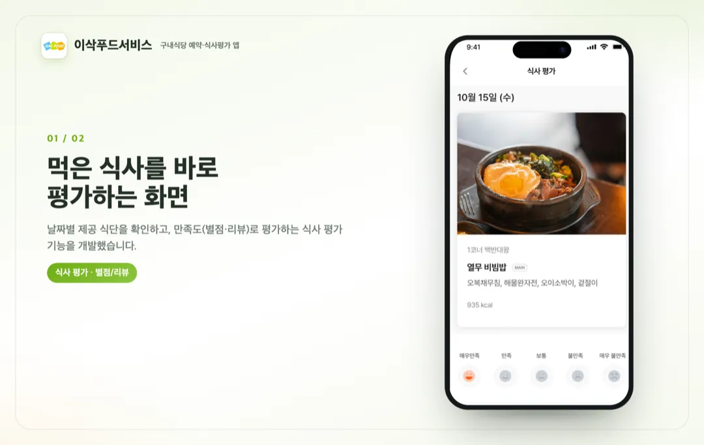
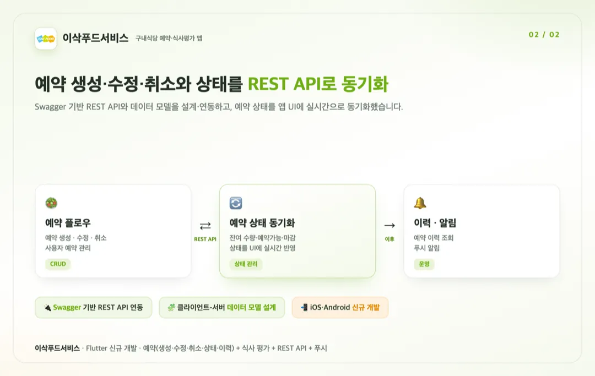

홈 / 포트폴리오 / IsacFood — 구내식당 예약·평가
앱 개발
구내식당 식단 예약·식사평가 앱 이삭푸드서비스 Flutter 신규 개발
참여 기간 · 2026.01 ~ 2026.02


포트폴리오 소개
- 위탁급식·구내식당 이용자를 위한 앱 '이삭푸드서비스'의 식단 예약과 식사 평가 기능을 Flutter로 개발했습니다.
- 앱 내에서 잔여 수량을 확인해 식단을 예약하고, 먹은 식사를 만족도(별점/리뷰)로 평가하도록 만들었습니다.
작업 범위
- Flutter 기반 iOS·Android 신규 개발
- Swagger 기반 REST API 연동 및 클라이언트-서버 데이터 모델 설계
- 예약 생성·수정·취소 플로우
- 예약 상태 관리 및 UI 실시간 동기화(잔여 수량·예약가능·마감)
- 식사 평가(별점/리뷰)
- 예약 이력 조회
- 푸시 알림
주요 업무 및 기능
- 예약: 잔여 수량 확인 → 예약 생성·수정·취소, 상태를 UI에 실시간 반영
- 평가: 날짜별 제공 식단 확인 후 만족도(별점/리뷰) 평가
- 연동: Swagger REST API 연동·데이터 모델 설계
- 운영: 예약 이력 조회, 푸시 알림
주안점
- 예약 상태(잔여·예약가능·마감)를 서버와 정확히 동기화하는 것
- Swagger 스펙 기반의 안정적인 API 연동·데이터 모델
- 예약~평가로 이어지는 사용자 흐름
문제점
- 구내식당 식단을 앱에서 예약하려면 잔여 수량·예약 상태가 서버와 정확히 맞아야 했습니다.
- 예약 생성·수정·취소에 따라 상태가 실시간으로 바뀌어 UI에 반영돼야 했습니다.
- 식사 후 평가를 통해 서비스 피드백을 모아야 했습니다.
프로젝트 목표
- Flutter로 예약·식사평가 기능을 iOS·Android 동시 개발.
- Swagger 기반 REST API·데이터 모델로 예약 상태를 안정적으로 동기화.
- 예약 이력·푸시로 이용 편의를 높임.
주안점
- 예약 상태 동기화의 정확성.
- API 연동·데이터 모델의 안정성.
- 예약~평가 사용자 흐름.
프로젝트 성과
예약 기능 개발(생성·수정·취소·상태)
잔여 수량을 확인해 식단을 예약하고, 예약 생성·수정·취소와 상태(예약가능·마감)를 UI에 실시간 동기화했습니다.
Swagger REST API 연동·데이터 모델 설계
Swagger 스펙 기반으로 REST API를 연동하고 클라이언트-서버 데이터 모델을 설계했습니다.
식사 평가·이력·푸시
날짜별 식단을 만족도(별점/리뷰)로 평가하고, 예약 이력 조회와 푸시 알림을 구현했습니다.
비슷한 프로젝트를 계획 중이신가요? 아이디어 단계여도 괜찮습니다.
프로젝트 문의하기 →